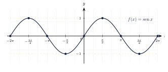
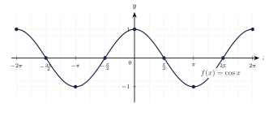
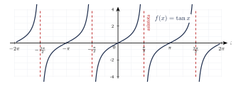

Capítulo 29
Funciones trigonométricas
UNAM IPN
Las razones trigonométricas pueden estudiarse como funciones cuyo dominio está formado por números reales que representan medidas angulares en radianes. Este enfoque permite analizar su comportamiento mediante gráficas y describir propiedades como el dominio, el rango, el periodo, la amplitud y las intersecciones con los ejes.
En este capítulo estudiarás las funciones seno, coseno y tangente, así como las transformaciones producidas al modificar sus parámetros.
29.1 Funciones periódicas#
Una función \(f\) es periódica si existe un número positivo \(T\) tal que:
para todos los valores de \(x\) para los que ambas expresiones estén definidas.
El menor valor positivo de \(T\) que cumple esta condición se denomina periodo fundamental de la función.
Una función periódica repite su comportamiento después de cada intervalo de longitud \(T\).
Las funciones seno y coseno tienen periodo fundamental:
mientras que las funciones tangente y cotangente tienen periodo fundamental:
En el estudio de las funciones trigonométricas, la variable \(x\) se interpreta normalmente como una medida angular en radianes.
Por ejemplo:
representa un ángulo de \(90^\circ\).
29.2 Función seno#
La función seno asigna a cada número real \(x\) la coordenada vertical del punto correspondiente del círculo unitario.
Se define mediante:
La función:
tiene las siguientes propiedades:
- su dominio es: \[D_f=\R;\]
- su rango es: \[R_f=[-1,1];\]
- su periodo fundamental es: \[T=2\pi;\]
- su amplitud es: \[1;\]
- es una función impar: \[\sen(-x)=-\sen x;\]
- sus intersecciones con el eje \(x\) ocurren cuando: \[x=n\pi, \qquad n\in\Z;\]
- interseca el eje \(y\) en: \[(0,0);\]
- alcanza su valor máximo, \(1\), cuando: \[x=\frac{\pi}{2}+2\pi n, \qquad n\in\Z;\]
- alcanza su valor mínimo, \(-1\), cuando: \[x=\frac{3\pi}{2}+2\pi n, \qquad n\in\Z.\]
La función seno es impar, por lo que su gráfica es simétrica respecto del origen:
La gráfica de la función seno en el intervalo \([-2\pi,2\pi]\) es:

En un periodo completo, desde \(0\) hasta \(2\pi\), la gráfica del seno pasa por los puntos:
y:
29.3 Función coseno#
La función coseno asigna a cada número real \(x\) la coordenada horizontal del punto correspondiente del círculo unitario.
Se define mediante:
La función:
tiene las siguientes propiedades:
- su dominio es: \[D_f=\R;\]
- su rango es: \[R_f=[-1,1];\]
- su periodo fundamental es: \[T=2\pi;\]
- su amplitud es: \[1;\]
- es una función par: \[\cos(-x)=\cos x;\]
- sus intersecciones con el eje \(x\) ocurren cuando: \[x=\frac{\pi}{2}+n\pi, \qquad n\in\Z;\]
- interseca el eje \(y\) en: \[(0,1);\]
- alcanza su valor máximo, \(1\), cuando: \[x=2\pi n, \qquad n\in\Z;\]
- alcanza su valor mínimo, \(-1\), cuando: \[x=\pi+2\pi n, \qquad n\in\Z.\]
La función coseno es par, por lo que su gráfica es simétrica respecto del eje \(y\):
La gráfica de la función coseno en el intervalo \([-2\pi,2\pi]\) es:

En un periodo completo, desde \(0\) hasta \(2\pi\), la gráfica del coseno pasa por los puntos:
y:
29.4 Relación entre el seno y el coseno#
Las funciones seno y coseno tienen la misma forma. Una puede obtenerse desplazando horizontalmente la otra:
y:
La función coseno está adelantada \(\frac{\pi}{2}\) respecto de la función seno.
También puede decirse que la función seno está desplazada \(\frac{\pi}{2}\) hacia la derecha respecto de la función coseno.
29.5 Función tangente#
La función tangente se define mediante:
La función no está definida cuando:
La función:
tiene las siguientes propiedades:
- su dominio es: \[D_f = \R \setminus \left\{ \frac{\pi}{2}+n\pi : n\in\Z \right\};\]
- su rango es: \[R_f=\R;\]
- su periodo fundamental es: \[T=\pi;\]
- no tiene amplitud;
- es una función impar: \[\tan(-x)=-\tan x;\]
- sus intersecciones con el eje \(x\) ocurren cuando: \[x=n\pi, \qquad n\in\Z;\]
- tiene asíntotas verticales en: \[x=\frac{\pi}{2}+n\pi, \qquad n\in\Z.\]
La función tangente no tiene amplitud porque no está acotada entre un valor máximo y un valor mínimo.
En cada intervalo comprendido entre dos asíntotas consecutivas, la función toma valores arbitrariamente grandes, tanto positivos como negativos.
La gráfica de la función tangente puede representarse en la misma ventana horizontal utilizada para el seno y el coseno:

En los puntos:
la tangente no es infinita. La función simplemente no está definida, pues:
produciría una división entre cero.
29.6 Funciones secante, cosecante y cotangente#
Las funciones trigonométricas recíprocas se definen mediante:
La función:
tiene:
- dominio: \[\R \setminus \left\{ \frac{\pi}{2}+n\pi : n\in\Z \right\};\]
- rango: \[(-\infty,-1]\cup[1,\infty);\]
- periodo: \[2\pi;\]
- asíntotas verticales en: \[x=\frac{\pi}{2}+n\pi.\]
La función:
tiene:
- dominio: \[\R\setminus\{n\pi:n\in\Z\};\]
- rango: \[(-\infty,-1]\cup[1,\infty);\]
- periodo: \[2\pi;\]
- asíntotas verticales en: \[x=n\pi.\]
La función:
tiene:
- dominio: \[\R\setminus\{n\pi:n\in\Z\};\]
- rango: \[\R;\]
- periodo: \[\pi;\]
- asíntotas verticales en: \[x=n\pi.\]
29.7 Transformaciones del seno y el coseno#
Una función sinusoidal puede escribirse en la forma:
o:
donde:
En las funciones:
y:
se tienen las siguientes propiedades:
- la amplitud es: \[|A|;\]
- el periodo es: \[T=\frac{2\pi}{|B|};\]
- el desplazamiento horizontal es: \[h=-\frac{C}{B};\]
- el desplazamiento vertical es: \[D;\]
- la línea media o eje central es: \[y=D;\]
- el valor máximo es: \[D+|A|;\]
- el valor mínimo es: \[D-|A|;\]
- el rango es: \[[D-|A|,D+|A|].\]
Es recomendable factorizar el argumento antes de identificar el desplazamiento horizontal.
Por ejemplo:
Por tanto, la gráfica se desplaza:
hacia la derecha.
La amplitud es siempre un número no negativo:
Si \(A<0\), el signo negativo produce una reflexión respecto de la línea media \(y=D\), pero la amplitud continúa siendo \(|A|\).
Determina la amplitud, el periodo, el desplazamiento horizontal y la línea media de:
Ver solución
Identificamos:
La amplitud es:
El periodo es:
El desplazamiento horizontal es:
La gráfica está desplazada:
hacia la derecha.
La línea media es:
Determina la amplitud y el periodo de:
Ver solución
Identificamos:
La amplitud es:
El periodo es:
El signo negativo produce una reflexión de la gráfica respecto del eje \(x\).
29.8 Puntos clave de una función sinusoidal#
Para construir un ciclo de una función seno o coseno, el periodo:
puede dividirse en cuatro partes iguales.
La distancia entre puntos clave consecutivos es:
En un ciclo de la función seno básica, los valores siguen el patrón:
En un ciclo de la función coseno básica, siguen el patrón:
Después se aplican la amplitud, la reflexión y el desplazamiento vertical.
Determina cinco puntos clave de:
en el intervalo \([0,2\pi]\).
Ver solución
La función básica \(\sen x\) tiene puntos clave en:
Sus valores son:
Multiplicamos por \(2\) y sumamos \(1\):
Por tanto, los puntos clave son:
y:
29.9 Transformaciones de la tangente#
Una transformación de la función tangente puede escribirse como:
donde:
Para:
se tiene:
- periodo: \[T=\frac{\pi}{|B|};\]
- desplazamiento horizontal: \[h=-\frac{C}{B};\]
- desplazamiento vertical: \[D;\]
- línea central: \[y=D.\]
La función tangente no tiene amplitud, porque su rango es \(\R\) y no posee valores máximo ni mínimo.
29.10 Identificación de gráficas#
Identifica la función cuya gráfica pasa por \((0,1)\), alcanza un máximo en \(x=0\), cruza el eje \(x\) en \(x=\frac{\pi}{2}\) y alcanza un mínimo en \(x=\pi\).
Ver solución
La función coseno básica satisface:
y:
Por tanto, la función es:
Identifica la función cuya gráfica pasa por el origen, alcanza un máximo en \(x=\frac{\pi}{2}\) y un mínimo en \(x=\frac{3\pi}{2}\).
Ver solución
La función seno básica satisface:
y:
Por tanto, la función es:
Para identificar una función trigonométrica a partir de su gráfica, conviene observar:
- el valor de la función cuando \(x=0\);
- sus máximos y mínimos;
- sus intersecciones con el eje \(x\);
- la distancia horizontal entre dos ciclos;
- la presencia de asíntotas verticales;
- la posición de la línea media.
29.11 Ejercicios propuestos#
Indica el dominio, el rango y el periodo de:
Ver solución
Dominio: \(\mathbb{R}\). Rango: \([-1,1]\). Periodo: \(2\pi\).
Indica el dominio, el rango y el periodo de:
Ver solución
Dominio: \(\mathbb{R}\). Rango: \([-1,1]\). Periodo: \(2\pi\).
Indica las asíntotas verticales de:
en el intervalo:
Ver solución
Las asíntotas verticales son \(x = -\dfrac{3\pi}{2}, \ -\dfrac{\pi}{2}, \ \dfrac{\pi}{2}, \ \dfrac{3\pi}{2}\).
Determina la amplitud y el periodo de:
Ver solución
Amplitud: \(|4| = 4\). Periodo: \(\dfrac{2\pi}{3}\).
Determina la amplitud y el periodo de:
Ver solución
Amplitud: \(|-3| = 3\). Periodo: \(\dfrac{2\pi}{1/2} = 4\pi\).
Determina el desplazamiento horizontal de:
Ver solución
Desfasamiento: \(-\dfrac{C}{B} = -\dfrac{-\pi/4}{1} = \dfrac{\pi}{4}\) (desplazada \(\pi/4\) a la derecha).
Determina la amplitud, el periodo y el desplazamiento horizontal de:
Ver solución
Amplitud: \(2\). Periodo: \(\dfrac{2\pi}{3}\). Desfasamiento: \(-\dfrac{\pi}{3}\) (desplazada \(\pi/3\) a la izquierda).
Evalúa:
Ver solución
\(\sin 0 = 0\), \(\sin \dfrac{\pi}{2} = 1\), \(\sin \pi = 0\), \(\sin \dfrac{3\pi}{2} = -1\).
Evalúa:
Ver solución
\(\cos 0 = 1\), \(\cos \dfrac{\pi}{2} = 0\), \(\cos \pi = -1\), \(\cos \dfrac{3\pi}{2} = 0\).
¿En qué valores del intervalo:
la función:
alcanza su valor máximo? ¿En qué valor alcanza su valor mínimo?
Ver solución
El máximo se alcanza en \(x = \dfrac{\pi}{2}\). El mínimo se alcanza en \(x = \dfrac{3\pi}{2}\).